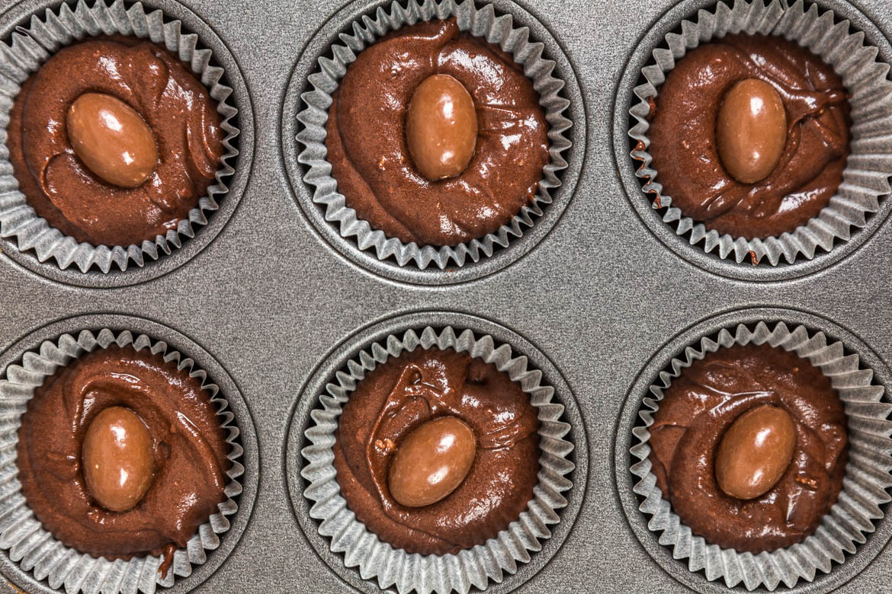

Cupcakes Schokobons

Hello les gourmands!!! Aujourd’hui je partage avec vous cette recette de kinder schokobons réalisés pour l’anniversaire de mon chéri.
5 ans que nous nous taquinions sur ces cupcakes aux schokobons, 5 ans qu’il pensait ne jamais les voir! 5 ans plus tard je me suis enfin décidée à l’occasion de son anniversaire à réaliser cette recette. Avant d’ouvrir ce blog, quand j’étais encore étudiante je vendais des cupcakes dans la région bordelaise puis je suis rentrée dans la vie active et j’en faisais beaucoup moins. Pourtant, j’aime autant qu’avant décorer ces petites portions de gâteaux alors son anniversaire était l’occasion parfaite pour refaire une de mes recettes favorites. Si on ne mange que très peu de gâteaux industriels, les schokobons, kinder surprise, kinder bueno et compagnie sont une de nos très grandes faiblesses, (Pâques est d’ailleurs notre moment préféré de l’année 😉 )!! Vous trouverez d’ailleurs ma recette de cupcakes aux kinder bueno ICI.
Pour cette recette, la base (ultra moelleuse) des cupcakes est au chocolat (avec un petit schokobon caché à l’intérieur) et le glaçage est au mascarpone et à la crème fouettée. Personnellement, je n’aime pas les glaçages des cupcakes que je trouve souvent soit trop écœurants (à cause du beurre), soit trop gras ou alors trop sucré. J’aime bien le glaçage au beurre à la meringue suisse car il est beaucoup plus léger qu’un glaçage au beurre classique mais ce glaçage au mascarpone et à la vanille que je vous présente ici est de loin mon préféré car il est vraiment très léger et rapide à réaliser.
Pas de difficultés particulières pour réaliser la recette (j’en ai fait 9 mais dans des plus petites caissettes vous pouvez en réaliser jusqu’à 12 facilement). Ce que je peux vous dire c’est que mon chéri était vraiment vraiment le plus heureux du monde en découvrant ces cupcakes et je pense que la prochaine fournée sera pour très bientôt ;). Je vous laisse avec la recette et je vous souhaite de passer un très bon week-end ♥
Ingrédients
- Beurre doux mou - 60g
- Sucre semoule - 125g
- Oeuf - 1
- Sel - 1/4 càc
- Farine - 100g
- Cacao - 30g
- Levure chimique - 1 càc
- Bicarbonate de soude - 1 pincée (facultatif)
- Lait - 100ml
- Schokobons - 1 par cupcakes
- Mascarpone - 250g
- Crème liquide entière - 150ml
- Vanille - 1 càc d'extrait de vanille
- Vanille en poudre (facultatif) - 1/2 càc
- Sucre glace - 50g
- Schokobons - 1 par cupcakes
Instructions
- Préchauffez le four à 170°C (chaleur tournante) ou 180°C chaleur statique
- Découpez le beurre en morceaux et déposez le dans le bol de votre robot (ou dans un saladier)
- Battre le beurre avec le sucre (si vous utilisez un robot, utilisez la feuille)
- Ajoutez l’œuf en continuant de battre
- Mélangez tous les ingrédients secs ensemble (farine, cacao, sel, levure, bicar)
- Ajoutez la moitié des ingrédients secs au mélange
- Puis ajoutez la moitié du lait
- Et recommencez jusqu'à épuisement des ingrédients secs et du lait
- Versez le mélange dans les caissettes (aux 3/4 pour que ça ne déborde pas lors de la cuisson)
- Ajoutez un schokobon par cupcakes sans l'enfoncer dans la pâte car il va tomber tout seule pendant la cuisson
- Enfournez pendant 18 minutes dans le four préchauffé
- A la sortie du four, laissez les cupcakes entièrement refroidir
- Préparez le glaçage
- La crème doit être bien froide
- Dans le bol de votre robot (ou saladier si vous utilisez un batteur électrique), versez la crème
- Montez la crème en chantilly
- Quand elle commence à bien monter, ajoutez le mascarpone, le sucre glace et la vanille
- Continuez de battre jusqu'à obtenir un crème bien homogène, lisse et ferme
- Transférez la crème dans une poche à douille munie de votre douille favorite
- Glacez les cupcakes une fois qu'ils sont bien refroidis
- Décorez avec 1 schokobon coupé en deux, des noisettes concassées et des sprinkles (ici des petits cœurs♥)
- Gardez au frais jusqu’au moment de servir

Les tips de la communauté
Grand succès récurrent. Les schokobons qui fondent légèrement au cœur du gâteau créent une bonne surprise. Facilement adaptable, même pour débutants.
Astuces
- La surprise croquante des schokobons crée un contraste agréable
- Conserver les cupcakes filmés au frais si préparation la veille
- Les cupcakes se conservent bien au réfrigérateur avant glaçage
- Essayer la poudre de noisette (40g) avec 60g de farine pour remplacer le cacao
- Possibilité de remplacer les schokobons par d'autres confiseries
Variantes suggérées
- Remplacer les schokobons par des Mars ou autre bonbon
- Poudre de noisette à la place du cacao (40g noisette + 60g farine)
- Possibilité de faire différentes variantes (Kinder bueno, citron-coco, etc.)
Ajustements signalés
- conserver les cupcakes dans du film alimentaire et au frais.. Bonne journée!